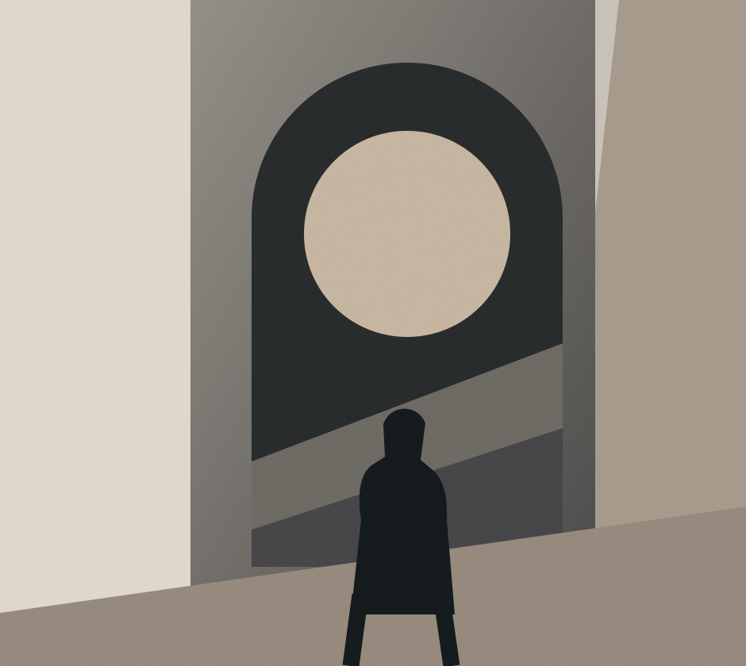
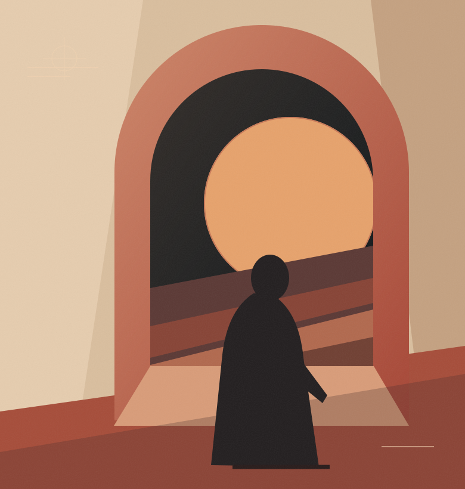
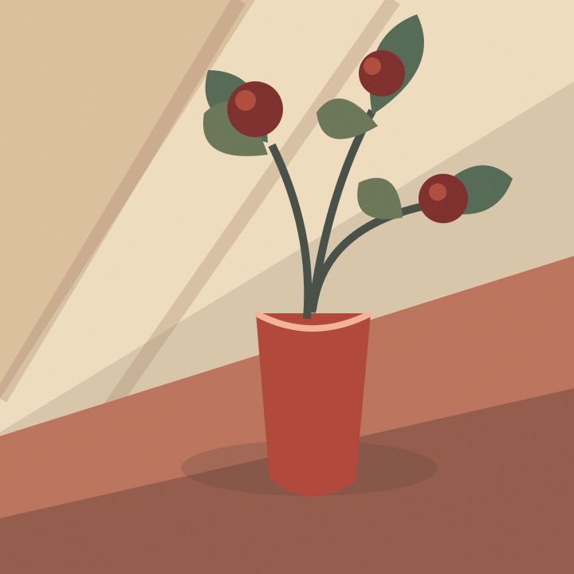
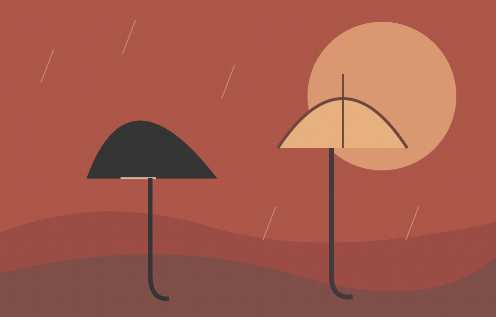

When the city forgets your name
A story about the streets we leave, and the versions of ourselves that stay behind.
For the stories that linger. The sentences you underline. The parts of being human that don’t fit neatly into a headline.
Step inside the issue A home for the beautifully in-between.
Some things ask to be read twice. This collection brings together invented voices exploring memory, belonging, tenderness, and the unexpected beauty of ordinary life.
ISSUE 001 — AN EDITORIAL PROTOTYPEShowing all four sample pieces

A story about the streets we leave, and the versions of ourselves that stay behind.

For everything left on the windowsill.
On the lives we nearly lived and the places we almost called home.

Sometimes the forecast is only another way of asking how someone is doing.
“Not everything
has to be loud
to be heard.”
The internet moves fast. Good writing has its own sense of time.
MARGIN is a fictional independent magazine imagined around a simple idea: that stories are worth making space for. Not an endless feed. Not a race to the next thing. Just a thoughtful place to encounter words and return to them.